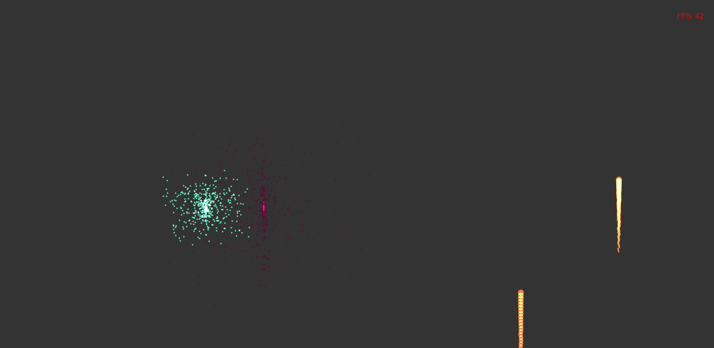

最近感觉canvas挺有意思的，在业余时间没事研究了一下，参考过网上一些思路，话不多说，开始啦。
github地址：https://github.com/aWhiteBear/fireworks
演示地址：https://awhitebear.github.io/fireworks/
图片效果如下：（右上角能显示FPS，是时候看看你电脑的性能了哈哈~）

先说一下思路吧，其实很简单，烟花分为两个部分：1.窜天猴。2.爆炸效果。 当穿天猴的竖直方向的速度为0的时候，让它爆炸。
下面是一些常量，后面类中会用到的
1 const canvas = document.getElementById('canvasNode');
2 const ctx = canvas.getContext('2d');
3 canvas.width = window.innerWidth;
4 canvas.height = window.innerHeight;
5 const CANVAS_WIDTH = canvas.width;
6 const CANVAS_HEIGHT = canvas.height;
7 const GRAVITATIONAL = 2.5; // 模拟重力加速度
8 const AIR_RESISTANCE = 1; // 模拟空气阻力
9 const EVERY_FIREWORK_TIME = 3; // 每个烟花的持续时间，单位：秒
10 const FRAME = 60;class FlyingMonkey{ // 窜天猴，发射升空的，目前只能垂直发射
constructor(x,y,speedX,speedY){
this.x = x; // x,y 是窜天猴的位置坐标
this.y = y;
this.speedX = speedX;
this.speedY = speedY;
this.opacity = 1;
this.count = 50; // 窜天猴和其尾巴由这50个圆绘制而成
for(let i=0;i<this.count;i++){
this.createCircle(i);
}
}
createCircle(i) { // 创建窜天猴的圈圈尾巴
ctx.beginPath();
ctx.save();
ctx.globalCompositeOperation = 'lighter';
ctx.fillStyle = `rgba(245,123,63,${this.opacity})`;
ctx.arc(this.x + (Math.random()-0.5) * i/10 + i/this.count * this.speedX, this.y + i/this.count * this.speedY ,8 - (6 * i/this.count),0,2 * Math.PI);
ctx.fill();
ctx.restore();
ctx.closePath();
}
}上面是窜天猴类，就是最开始向上发射的烟花，下面烟花类
class Firework { // 烟花，爆炸的
constructor(x,y,speedX,speedY){
this.x = x;
this.y = y;
this.speedX = speedX;
this.speedY = speedY;
this.opacity = 1;
this.count = 500; // 烟花的爆炸效果由500个点组成
this.AllFireworks = [];
this.createAllFirework();
Launch.arrFirework.push(this);
}
createAllFirework(){
let r = Math.floor(Math.random()*256), g = Math.floor(Math.random()*256) , b =Math.floor(Math.random()*256);
for(let i=0;i<this.count;i++){
this.AllFireworks.push({
r,g,b,
x:this.x,
y:this.y,
opacity:1,
speedX:this.speedX * i/this.count*10 *(Math.random()-0.5),
speedY:this.speedY * i/this.count*10 *(Math.random()-0.5)
});
}
this.updateAllFirework();
}
updateAllFirework(){
for(let i=0;i<this.AllFireworks.length;i++){
let {r,g,b,x,y,speedX,speedY,opacity} = this.AllFireworks[i];
this.AllFireworks[i].y = y - speedY/FRAME;
this.AllFireworks[i].x = x - speedX/FRAME;
this.AllFireworks[i].opacity = opacity - 1/ FRAME / EVERY_FIREWORK_TIME;
this.AllFireworks[i].speedY = speedY - GRAVITATIONAL;
if(Math.abs(speedX)>3/FRAME) { // 速度<= 3/FRAME 认为停止了
this.AllFireworks[i].speedX = speedX - (speedX>0?AIR_RESISTANCE:(AIR_RESISTANCE*(-1)));
} else {
this.AllFireworks[i].speedX = 0;
}
ctx.beginPath();
ctx.save();
ctx.globalCompositeOperation = 'lighter';
ctx.fillStyle = `rgba(${r},${g},${b},${this.AllFireworks[i].opacity})`;
ctx.arc(this.AllFireworks[i].x , this.AllFireworks[i].y ,2,0,2 * Math.PI);
ctx.fill();
ctx.restore();
ctx.closePath();
}
}
}下面是start类，用来发射窜天猴
class Start{
constructor(x,y,speedX,speedY){
Launch.arrFlyingMonkey.push(this);
this.x = x;
this.y = y;
this.speedX = speedX;
this.speedY = speedY;
this.begin();
}
begin(){
this.y = this.y - this.speedY/FRAME; // 速度减小
this.x = this.x - this.speedX/FRAME;
this.speedY = this.speedY - GRAVITATIONAL;
new FlyingMonkey(this.x, this.y, this.speedX, this.speedY);
}
}下面是发射类，是用【requestAnimationFrame】来渲染的动画
class Launch{ // 发射
constructor(){
this.fps=0;
this.sum=0;// 帧数计数器 60帧一循环
this.draw = this.draw.bind(this);
this.draw();
}
draw(){
ctx.clearRect(0,0,CANVAS_WIDTH,CANVAS_HEIGHT);
this.updateFps();
Launch.arrFlyingMonkey.forEach((item,i)=>{
item.begin();
if(item.speedY < 0){
Launch.arrFlyingMonkey.splice(i,1);
new Firework(item.x,item.y,7*7,5*7); // 烟花宽高比：7:5
}
});
Launch.arrFirework.forEach((item,i)=>{
item.updateAllFirework();
});
if(Launch.arrFirework.length>5){ // 清理arrFirework，避免占用过多内存，其实还可以通过 EVERY_FIREWORK_TIME 和 Launch.timer 更及时清理。length > EVERY_FIREWORK_TIME/Launch.timer
Launch.arrFirework.shift();
}
requestAnimationFrame(this.draw);
}
updateFps(){
if(this.sum++>=60){
this.sum = 0;
let nowTime = new Date().getTime();
this.fps = 60/(nowTime - Launch.lastTime) *1000;
Launch.lastTime = nowTime;
}
ctx.save();
ctx.fillStyle = 'red';
ctx.font="20px Arial";
ctx.fillText(`FPS: ${~~this.fps}`,CANVAS_WIDTH - 100,50);
ctx.restore();
}
}然后添加Launch静态属性
/** 添加Launch静态属性*/
Launch.arrFlyingMonkey = [];
Launch.arrFirework = [];
Launch.timer = setInterval(()=>{
new Start(CANVAS_WIDTH * (Math.random() * 0.8 + 0.1),CANVAS_HEIGHT * 0.9,0,300 *(Math.random()*0.5 + 1));
},1500);
Launch.lastTime = new Date().getTime();最后在 new Launch(); 就能发射出去啦。
代码还有好多可以优化的地方，在一些手机浏览器上会出现fps越来越低得到情况，画面会变卡，以后可能的话要在进行优化一下，也可以和大家讨论一下如何优化会更好，可以在评论区指导一下呀，感谢大家提出宝贵的意见~